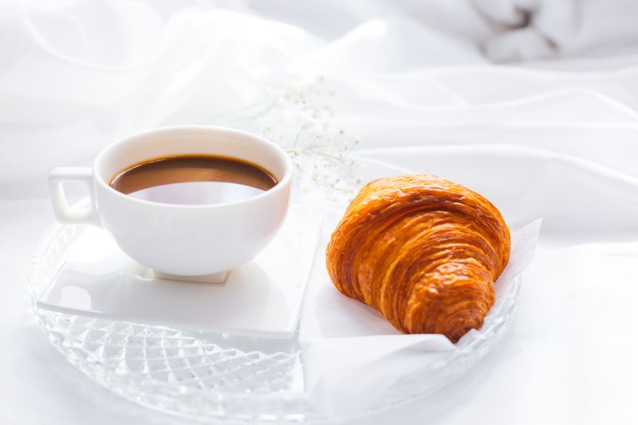
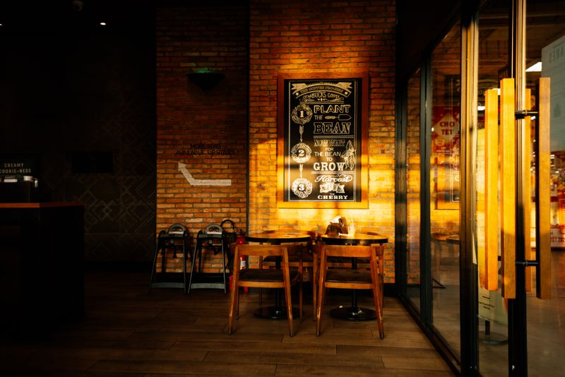
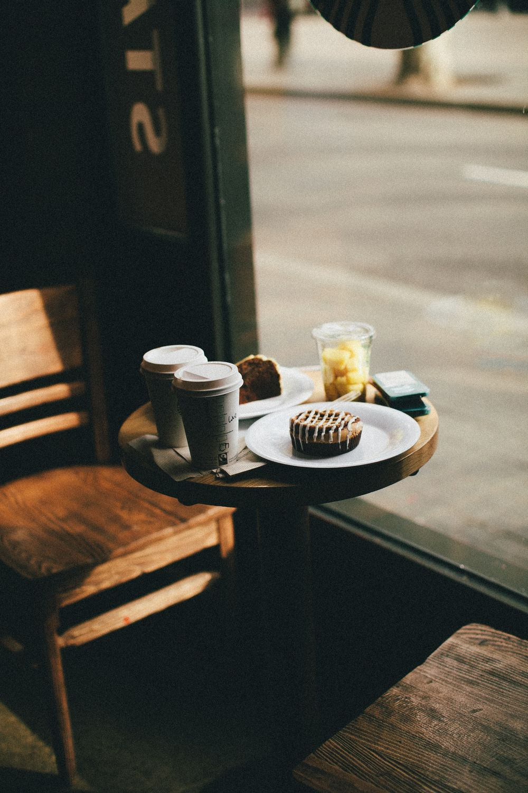
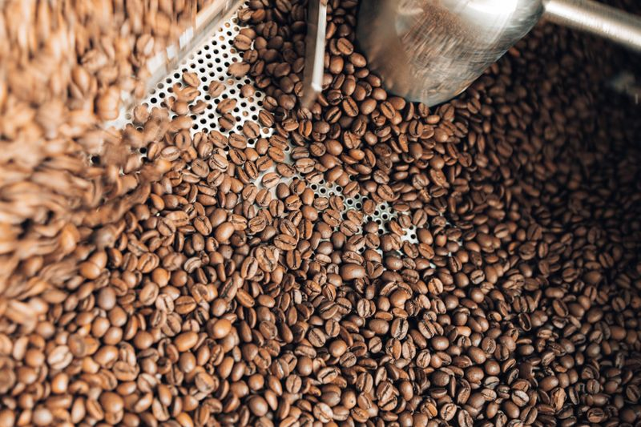
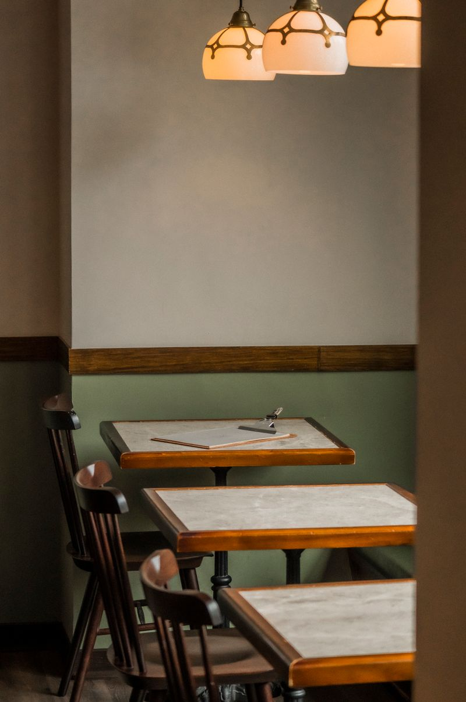

Welcome
INTI Coffee Bar is a small café concept at INTI International University. Start your day with a warm cappuccino, pick up an iced latte between classes, or enjoy a croissant with a friend. Our menu brings together familiar coffee favourites and a few sweet treats.
Come in for a quick breakfast or take a seat for an afternoon break. A cup of coffee, a small snack, and a comfortable corner are all you need to enjoy a slower moment in a busy day.



About Us
We want INTI Coffee Bar to feel like an easy place to visit every day. Students can read before their next class, friends can catch up over a drink, and university staff can stop by for their morning coffee. Take your time choosing a drink and make yourself comfortable.
Our coffee menu starts with espresso. Choose an Americano for a stronger coffee taste, a latte for a creamy drink, or a cappuccino for a layer of soft milk foam. Add a pastry or brownie when you feel like something sweet.



- Coffee & light bites
- A place to meet
- Open daily, 8 am–6 pm
Contact
Location: INTI International University
Opening hours: Daily, 8 am to 6 pm
Have a question about a drink, a pastry, or a visit with friends? Add your name, email, and message below. Tell us what you would like to try or when you plan to drop by.
Demo submission complete. This form does not send messages.